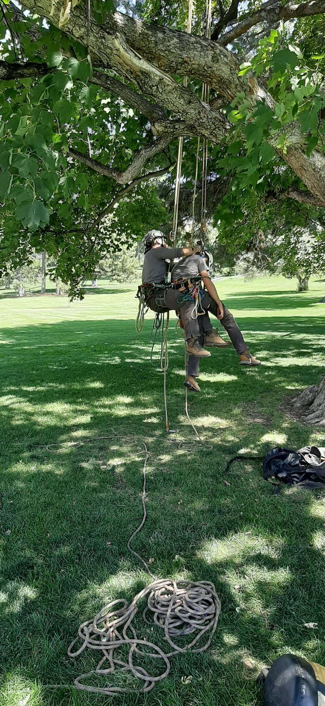
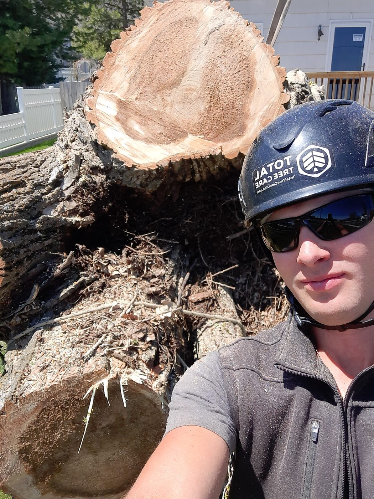
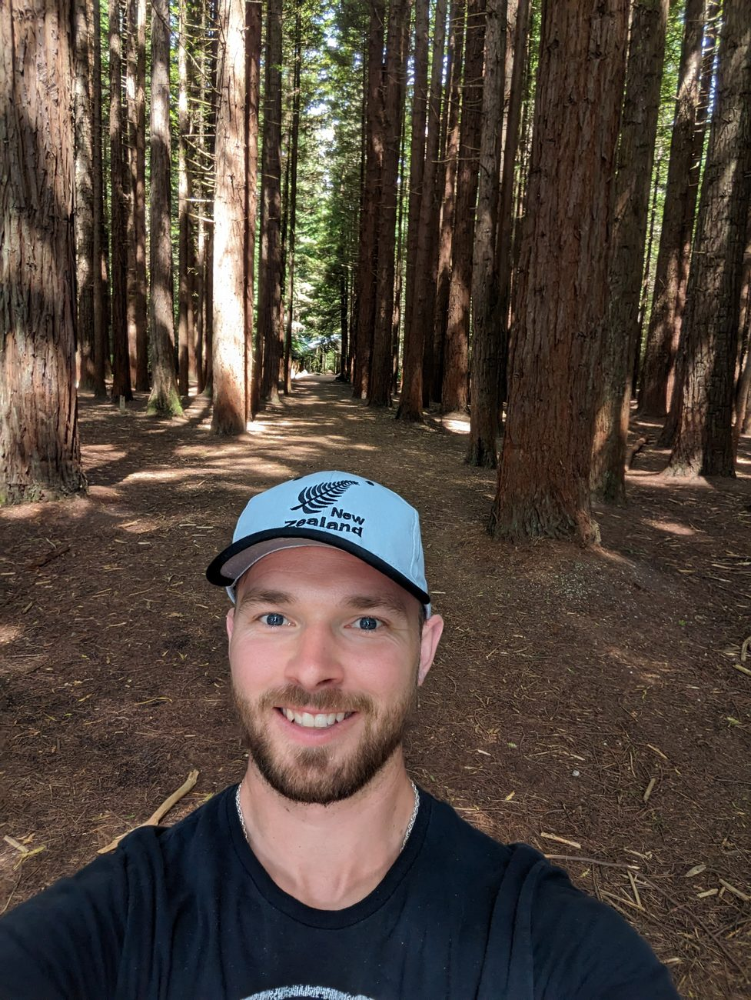

Pruning and Shaping
Structural, crown, and fruit-tree pruning. No flush cuts, no topping.
Family-run tree care and landscape design from Ben Ash, ISA Board Certified Master Arborist. Serving every city from Logan to Provo along the Wasatch Front. Honest assessments and careful work.
Every job goes through Ben himself, start to finish.
Structural, crown, and fruit-tree pruning. No flush cuts, no topping.
Dead, dying, or hazardous trees down safely. If it can be saved, we say so first.
Dieback, borers, fire blight. A walk-through and a written plan, not a sales pitch.
Ground below grade so you can replant or lay sod. Cleanup included.
The right tree in the right spot, matched to local soils and winters.
Steel cables and rods for mature trees with weak unions, so you can keep the tree.
Planting plans for homes, businesses, HOAs, and cities, from a former City Forester. Residential and commercial design.
Quote form or text. Whatever is easier.
You hear back within hours.
Free, no obligation, no pressure.
Scope in writing, cleanup included.
A long-term plan for every tree, and the training that keeps it healthy for decades.
It is all about the roots. Get those right and the rest of the tree follows.
Trees as part of the whole design and ecosystem, with a maintenance process built to stay simple.
An ISA Board Certified Master Arborist, the top tier of the field, and former City Forester for American Fork. He got his start at Total Tree Care. Ben handles every job himself, start to finish.
We would rather talk you out of a removal you do not need than charge you for one.
Off the clock he climbs in Utah tree-climbing competitions and turns up in the occasional local play. Same guy, more costumes.



Send photos and a quick description and we will get back to you. If it is urgent, call.
Best for non-urgent jobs and anything with photos. Or use the quote form.